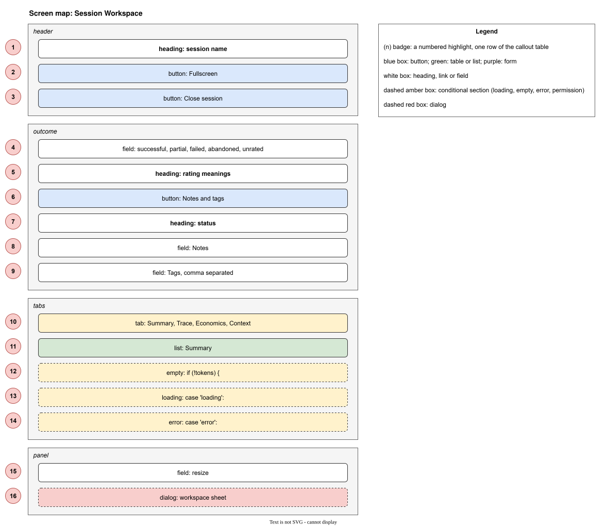

active approved inferred covers web/src/*, web/src/design-system/*
Session Workspace Screen Map
This map shows the panel a reader works in once they open one session. It lets them rate the outcome, keep notes and move between the four views of that session. It also shows how each tab waits for its data and what it shows when the server does not answer.
What the diagram shows
- The header shows the session name and subtitle, and in docked mode the fullscreen and close buttons
web/src/SessionWorkspace.tsx:497-532. - Under it sits the outcome control: a toggle group, an info glyph, the notes and tags button, a status line and the two fields
web/src/SessionWorkspace.tsx:303-362. - Four tabs follow; only the tabs the reader has opened fetch their data
web/src/SessionWorkspace.tsx:447web/src/SessionWorkspace.tsx:471-474web/src/SessionWorkspace.tsx:536-596. - A loading or failed tab shows a placeholder through one shared wrapper
web/src/SessionWorkspace.tsx:379-394. - Docked, the panel is an aside with a resize handle; otherwise it is a sheet
web/src/SessionWorkspace.tsx:600-625.
Capability and related functionality
The workspace is opened from Sessions Screen and hosts Trace Tab Screen, Economics Tab Screen and Context Tab Screen. Its loading states are drawn in Web Workspace State Chart and the outcome form in Web Outcome Form Wireframe. Rating a session is a use case in Web Specification.
Session Workspace Screen screen map

Code references
| Badge | Element | Code |
|---|---|---|
| 1 | <h2 session name |
web/src/SessionWorkspace.tsx:502-502 |
| 2 | <Button Fullscreen |
web/src/SessionWorkspace.tsx:518-523 |
| 3 | <Button Close session |
web/src/SessionWorkspace.tsx:527-527 |
| 4 | <ToggleGroup successful, partial, failed, abandoned, unrated |
web/src/SessionWorkspace.tsx:306-312 |
| 5 | <MetricInfo rating meanings |
web/src/SessionWorkspace.tsx:321-321 |
| 6 | <Button Notes and tags |
web/src/SessionWorkspace.tsx:330-330 |
| 7 | <span status |
web/src/SessionWorkspace.tsx:333-333 |
| 8 | <Textarea Notes |
web/src/SessionWorkspace.tsx:342-346 |
| 9 | <Input Tags, comma separated |
web/src/SessionWorkspace.tsx:352-356 |
| 10 | <TabsTrigger Summary, Trace, Economics, Context |
web/src/SessionWorkspace.tsx:547-547 |
| 11 | <SummaryTab Summary |
web/src/SessionWorkspace.tsx:555-555 |
| 12 | if (!tokens) { empty section |
web/src/SessionWorkspace.tsx:134-134 |
| 13 | case 'loading': loading section |
web/src/SessionWorkspace.tsx:387-387 |
| 14 | case 'error': error section |
web/src/SessionWorkspace.tsx:389-389 |
| 15 | <ResizeHandle resize |
web/src/SessionWorkspace.tsx:613-613 |
| 16 | <Sheet workspace sheet |
web/src/SessionWorkspace.tsx:620-620 |